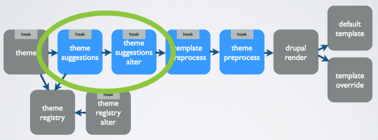
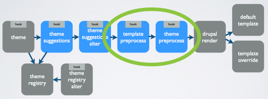

Drupal 8 Theming (for backenders)
10.01.2015 Lauri Eskola
Lauri Eskola

- Front and Back End Developer
- I live in Finland
- Working for Druid
- I do actually like cold
- Mostly working on Core issues related to Theme system on the Back End side
@lauriii

@laurii1
Changes related to theme layer
Drupal 7 theme layer - WTF?

Template process layer ...is gone!
hook_page_alter ...is gone!
Theme functions
...are being converted to Twig templates..
Goodbye theme(), hello render arrays
Drupal 7
<?php
$variables['list'] = theme('item_list', array(
'items' => $items,
));
Drupal 8
<?php
$variables['list'] = array(
'#theme' => 'item_list',
'#items' => $items,
);
Drupal 8 theme layer - FTW!

Theme suggestion hooks
Theme suggestion hooks
Drupal 7
<?php
/**
* Implements hook_preprocess_HOOK() for node templates.
*/
function MYTHEME_preprocess_node(&$variables) {
$variables['theme_hook_suggestions'][] = 'node__' . 'first_suggestion';
$variables['theme_hook_suggestions'][] = 'node__' . 'second_more_specific_suggestion';
}
Drupal 8
<?php
/**
* Implements hook_theme_suggestions_HOOK_alter() for node templates.
*/
function MYTHEME_theme_suggestions_node_alter(array &$suggestions, array $variables) {
$suggestions[] = 'node__' . 'first_suggestion';
$suggestions[] = 'node__' . 'second_suggestion';
}
Preprocess hooks & missing process functions
Attributes
<?php
/**
* Implements hook_preprocess_node().
*/
function hook_preprocess_node(&$variables) {
// Add new class.
$attributes->addClass('my-own-class');
// Remove elements default class.
$attributes->removeClass('default-class');
// Set elements id to kitten.
$attributes->setAttribute('id', 'kitten');
}
Attributes
Twig
<div{{ attributes }}>
Not like this:
<div {{ attributes }}>
<div✖{{ attributes }}>
Attributes
{%
set classes [
'a-lot-of',
'classes-needed',
'for-this-element'
]
%}
<div{{ attributes.removeClass('my-own-class').addClass('better-class', classes) }}>
Twig
Crash course for backenders
Twig magic
{{ sandwich.cheese }}
Same in PHP
// Array key.
$sandwich['cheese'];
// Object property.
$sandwich->cheese;
// Also works for magic get (provided you implement magic isset).
$sandwich->__isset('cheese'); && $sandwich->__get('cheese');
// Object method.
$sandwich->cheese();
// Object get method convention.
$sandwich->getCheese();
// Object is method convention.
$sandwich->isCheese();
// Method doesn't exist/dynamic method.
$sandwich->__call('cheese');
Print what you want, when you want
Drupal 7
<?php
// We hide the comments and links now so that we can render them later.
hide($content['comments']);
hide($content['links']);
print render($content);
Drupal 8
{# We give you what you ask for. #}
{{ content|without('comments', 'links') }}
Twig filters
Meant to manipulate content. Simply takes the first parameter from a variable or inline string and returns it in different format.
Example
{% set name = 'Lauri' %}
{# Print varibale using lenght filter. #}
{{ name|length }}
Returns
5
Twig functions
More viable functions with multiple parameters meant to create simple front-end logic
{{ dump() }}
This magic is built in Twig
How ever I'm going to show you how to add these by your self!
Adding Twig filters
<?php
/**
* A class providing my own Twig extension.
*/
class MyTwigExtension extends TwigExtension {
/**
* {@inheritdoc}
*/
public function getFilters() {
return array(
new \Twig_SimpleFilter('kitten', 'kitten'),
);
}
}
<?php
/**
* Helper functions to help kittens born.
*/
function kitten($string) {
return $string . ' kitten';
}
Adding Twig filters
{% set variable = 'my text' %}
{{ variable|kitten }}
my text kitten
Adding Twig functions
<?php
/**
* A class providing my own Twig extension.
*/
class MyTwigExtension extends TwigExtension {
/**
* {@inheritdoc}
*/
public function getFunctions() {
return array(
new \Twig_SimpleFunction('url', array($this, 'getUrl'), array('is_safe_callback' => array($this, 'isUrlGenerationSafe'))),
);
}
}
"I don't want to learn anything new!"
"I don't like Twig!"
Solution!
# engine: phptemplate
themename.info
Autoescape

Context-Aware Auto-Escaping
Basic idea: everytime variable goes to template run appropriate escaping function!
Different Escape functions
<?php
Drupal\Component\Utility\SafeMarkup::isSafe();
Drupal\Component\Utility\SafeMarkup::escape();
Drupal\Component\Utility\SafeMarkup::checkAdminXss();
How it works?
<?php
public static function escape($string) {
return static::isSafe($string) ? $string : String::checkPlain($string);
}